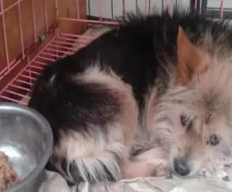
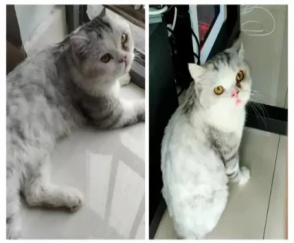
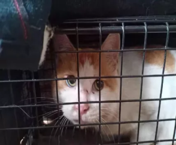

公益项目 · 风雨同舟

“不能让它们再失去家了！”这是本次筹粮发起人姚丽对我们重复最多的一句话，这些年姚丽自己苦苦支撑流浪狗救助基地，
从最初的几十只到现在的几百多只，还不包括被领养走的，和所有救助人一样，收养流浪动物这些年的苦和难，其中的辛苦劳累是我们无法想象的！所以我们应当和他一起救助无辜的动物们，给动物们一个家。
联 系 我 们
联 系 我 们

猫咪因为后腿天生残疾的原因走路有点不稳，原主人发现它的时候，它正在街上流浪，后带到医院治疗，因原主人家中有其他猫咪，没有办法更好的照顾它，现找寻爱猫人士，
不嫌弃它后腿残疾，专一的爱护它，可以做到不离不弃一辈子。熟悉了以后能感受到性格特别好，粘人乖巧，温顺不伸爪子，适合陪伴，有意者请与我们联系。
联 系 我 们
联 系 我 们

数百条的流浪宠物正在发出“求救声”！
目前疫情情况不容乐观，防控疫情力度加大的同时，流浪宠物救助的工作也变得特别沉重，再加上疫情影响到自身生活变得窘迫，进退两难，也没办法让流浪动物过得安稳 这也是下边两位阿姨内心真实的心声。以下内容均来自两位救助人真实求助信息。
联 系 我 们
目前疫情情况不容乐观，防控疫情力度加大的同时，流浪宠物救助的工作也变得特别沉重，再加上疫情影响到自身生活变得窘迫，进退两难，也没办法让流浪动物过得安稳 这也是下边两位阿姨内心真实的心声。以下内容均来自两位救助人真实求助信息。
联 系 我 们